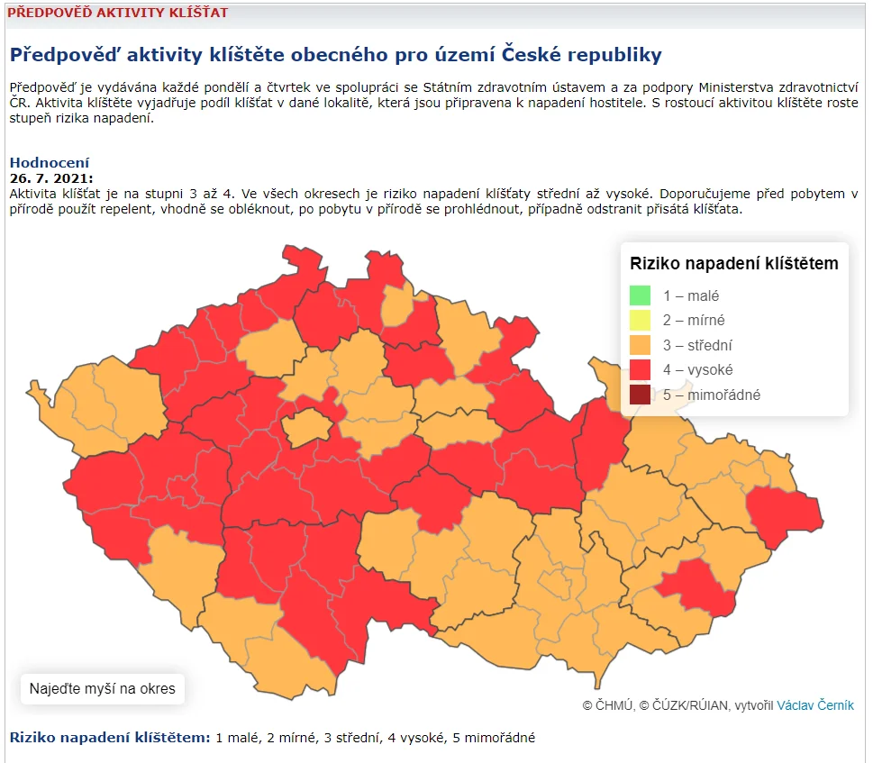

Co jsou to otevřená data
Namísto definice otevřených dat – která přijde později – si nejprve
ukážeme příklady otevřených dat a jak mohou být taková data
využívána.
Příklad I / Interaktivní mapa aktivních případů COVID-19 na Novinky.cz
Ministerstvo zdravotnictví poskytuje data týkající se onemocnění covid 19. Tato data mohou být využita např. v podobě interaktivních vizualizací. Poskytovatel nemusí tyto vizualizace připravovat – otevřením dat poskytovatel umožnil třetí straně (např. serveru novinky.cz) vytvořit vizualizaci dat na mapovém podkladu, která slouží jako nová služba občanům.
Principy otevřených dat I
Uvedené dvě aplikace mají společné mimo jiné to, že staví na
otevřených datech.
Klíčové je především to, že:
- data, s nimiž aplikace pracují, lze zpracovávat strojově, tzv.
strojová čitelnost (bude vysvětlena později),
- data jsou k dispozici za jasně definovaných podmínek,
které nejsou omezující – nevylučují některé skupiny uživatelů či
určité způsoby použití, například komerční.
Principy otevřených dat II
Další důležité aspekty používaných dat:
- Data, s nimiž aplikace pracují, jsou ve formátech s otevřenou
specifikací – pro jejich otevření či přečtení nemusejí
tvůrci aplikací pořizovat konkrétní speciální programy.
- Jsou dobře zdokumentovaná a jejich poskytovatel je důvěryhodný – v kontextu legislativy ČR to znamená, že jsou zaregistrována v Národním katalogu otevřených dat.
Aplikace nejsou otevřená data
Aplikace nelze zaměňovat za otevřená data.
Aplikace může být přístupná bezplatně, může být i užitečná, ale…
…nikdo jiný než vlastník dat nebude moci
vytvořit podobnou či lepší aplikaci, nebo data v ní prezentovaná
integrovat do svého systému.
Příkladem může být mapová vizualizace aktivity klíštěte obecného na
území ČR, kterou na svých stránkách zveřejňuje Český
hydrometeorologický ústav.

Co je strojová čitelnost?
Strojově čitelná data
- jsou ve formátu, který umožňuje aplikacím přistupovat k
jednotlivým datovým položkám,
- jsou strukturována tak, aby umožňovala automatické zpracování.
Příkladem strojově čitelných dat je dobře
strukturovaná tabulka ve formátu
CSV (textový soubor pro tabulková data, ve kterém jsou
jednotlivé položky odděleny čárkami).
Jaká data nejsou strojově čitelná?
- soubory ve formátu XLSX obsahující grafické formátování,
případně vložené grafy,
- naskenované PDF dokumenty,
- mapy v aplikacích, které jsou ovládány
„lidským uživatelem“.
V těchto případech k jednotlivým datovým
položkám nelze obecně přistupovat pomocí programu/aplikace
– je zapotřebí člověka, aby porozuměl významu dat (např. vyčetl data
z grafu či mapy).
Datová sada vs. distribuce datové sady
Pro úplnost ještě představíme dvojici souvisejících pojmů: datová
sada a distribuce datové sady.
Datová sada je množina
souvisejících dat, vztahujících se k jednomu věcnému tématu.
Distribuce datové sady je
konkrétní datový zdroj, typicky v podobě souboru či aplikačního
rozhraní API, který zpřístupňuje data datové sady nebo jejich část.
Informace o poskytovaných distribucích
dané datové sady se objevuje mj. v příslušném katalogizačním záznamu
v NKOD.
Katalogizační záznam v NKOD přísluší konkrétní datové sadě. Obsahuje příslušná metadata datové sady, např. název datové sady, poskytovatele datové sady, informace o periodicitě aktualizace atp. Některé položky metadat jsou pro registraci do NKOD povinné.
Datová sada vs. distribuce datové sady II
Příkladem může být datová sada faktur přijatých daným úřadem, její
distribuce pak může mít podobu CSV souboru.
Jedna datová sada může mít více
distribucí, např. CSV soubor, XML soubor aj.
Ovšem pozor, jednotlivé distribuce nemohou
být strukturovány/děleny např. po kvartálech, letech, obcích, krajích
– v tom případě by se jednalo o různé datové sady.
Datová sada vs. distribuce datové sady III
Ukázkou jedné datové sady s více distribucemi mohou být např. Agendy evidované v Registru práv a povinností
ve smyslu § 51 zákona č. 111/2009 Sb. o základních registrech,
které jsou dostupné ve formátu JSON, JSON-LD i jako
SPARQL-endpoint.

Neomezující podmínky užití I
Podmínky užití dat:
- neomezují jejich uživatele ve způsobu použití dat – lze
je použít jakýmkoliv způsobem, který není v rozporu se zákonem,
- umožňují komerční užití,
- umožňují další šíření, přičemž při dalším
šíření musí mít všichni uživatelé stejná oprávnění s daty nakládat
Cílem je umožnit snadné šíření dat
jak pro nekomerční tak i komerční účely.
Neomezující podmínky užití II
Neomezující podmínky umožňují, aby data byla využívána bez
nutnosti vyjednávat s jejich poskytovatelem.
Data splňující takovéto principy lze
„přibalit“ k vyvíjené aplikaci/službě, tu je možné integrovat do
dalších systémů, dále šířit za stejných podmínek, …
Vymezení otevřených dat
Za otevřená data budeme nyní považovat taková
data, která jsou:
- dostupná na internetu ke stažení bez technických a jiných překážek
(registrace, omezení počtu přístupů, ...),
- strojově čitelná,
- používající standardy s volně dostupnou specifikací,
- jsou registrována v Národním katalogu otevřených dat,
- zpřístupněna za jasně definovaných podmínek užití dat bez
omezení.
V dalších modulech definici otevřených
dat upřesníme vzhledem k naší legislativě – definice ale
samozřejmě bude v souladu s těmito principy.
Otevřená data v ČR a FAIR principy I
Otevřená data v ČR jsou v souladu s obecnými principy FAIR
– ty požadují, aby data byla:
- vyhledatelná (Findable),
- dostupná (Accessible),
- interoperabilní (Interoperable),
- opětovně využitelná (Reusable).
Otevřená data v ČR a FAIR principy II
- (F) Vyhledatelnost otevřených dat je zajištěna
jejich registrací do NKOD a vyplněním všech povinných položek
metadat.
- (A) Dostupnost je
zajištěna jejich vystavením na internetu.
- (I) Interoperabilita
je zajištěna využíváním otevřených formátů, strojovou čitelností a
standardů.
- (R) Opětovná využitelnost
je pak zajištěna vhodnými (neomezujícími) podmínkami užití.
Obecné přínosy otevřených dat
Mezi hlavní přínosy otevřených dat patří:
- zvyšování transparentnosti organizace,
- podpora snadného a opětovného užití dat, ať už
dalšími úřady či veřejností,
- poskytnutí příležitosti pro vývoj užitečných aplikací
třetími stranami nad těmito daty.
Další přínosy jsou uvedeny na Portálu o datech.